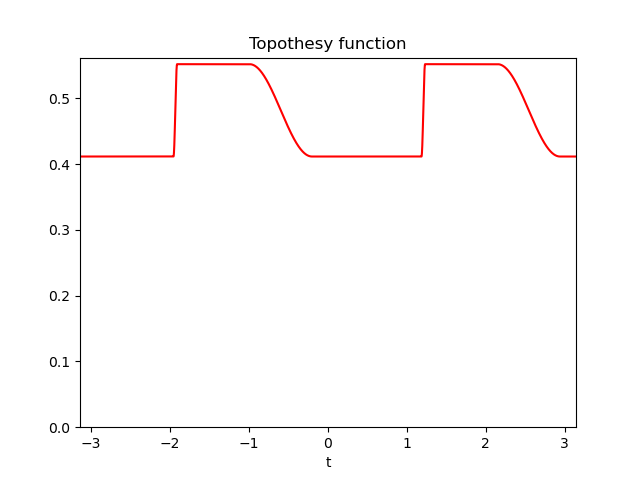
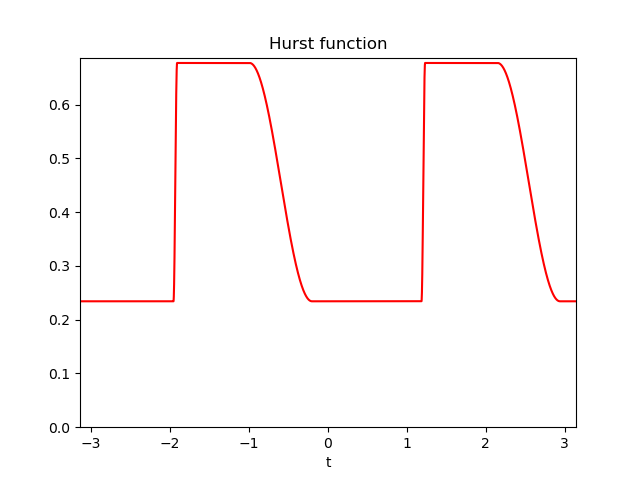

Note
Click here to download the full example code
Build a database using a predefined protocol
Code author: Frédéric Richard <frederic.richard_at_univ-amu.fr>
- 
- 

Define a new protocol.
Protocol:
Directory:../data/TestSet/
Number of examples: 0
Image size: 512 x 512
Hurst function:
Number of parameters: 2
Step constant sampling: unifmin
Step interval sampling: nonunif
Minimal Hurst value: 0.05
Maximal Hurst value: 0.95
Minimal interval lenght between steps: 0.03
Number of turning bands: 500
Field simulation:
From example 0 to 9
Save option:True
to directory:../data/TestSet/
Display option:False
Example 2
Hurst-related parameters:
min = 0.23, argmin length = 0.79 and center = -0.60
from afbfdb.Protocol import Protocol_001
# directory to save examples.
home_dir = "../data/"
data_dir = home_dir + "TestSet/"
N = 512 # image size
first_example = 0
last_example = 9 # index of the last example.
_save = True # true if examples are to be saved.
_display = False # true if examples are to be displayed.
# Set the protocol.
simu = Protocol_001(data_dir, N=N)
# Simulate fields.
simu.SimulateFields(_save=_save, _display=_display,
expe_start=first_example, expe_end=last_example)
# Show an example.
simu.ShowExample(2)
Total running time of the script: ( 0 minutes 55.199 seconds)